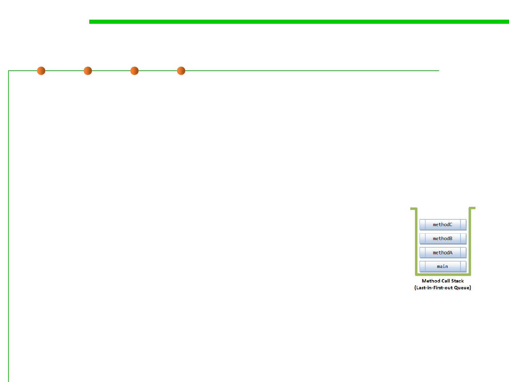

Call Stack Trace
7.2 Error and Exception Handling
▪ Process:
– MethodC() triggers an ArithmeticException. As it does not handle this
exception, it popped off from the call stack immediately.
– MethodB() also does not handle this exception and popped off the call
stack. So does methodA() and main() method.
– The main() method passes back to JVM, which abruptly terminates the
program and print the call stack trace.
Enter main()
Enter methodA()
Enter methodB()
Enter methodC()
Exception in thread "main" java.lang.ArithmeticException: / by zero
at MethodCallStackDemo.methodC(MethodCallStackDemo.java:22)
at MethodCallStackDemo.methodB(MethodCallStackDemo.java:16)
at MethodCallStackDemo.methodA(MethodCallStackDemo.java:10)
at MethodCallStackDemo.main(MethodCallStackDemo.java:4)